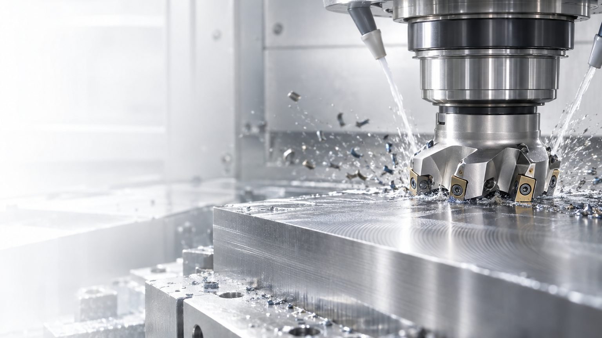
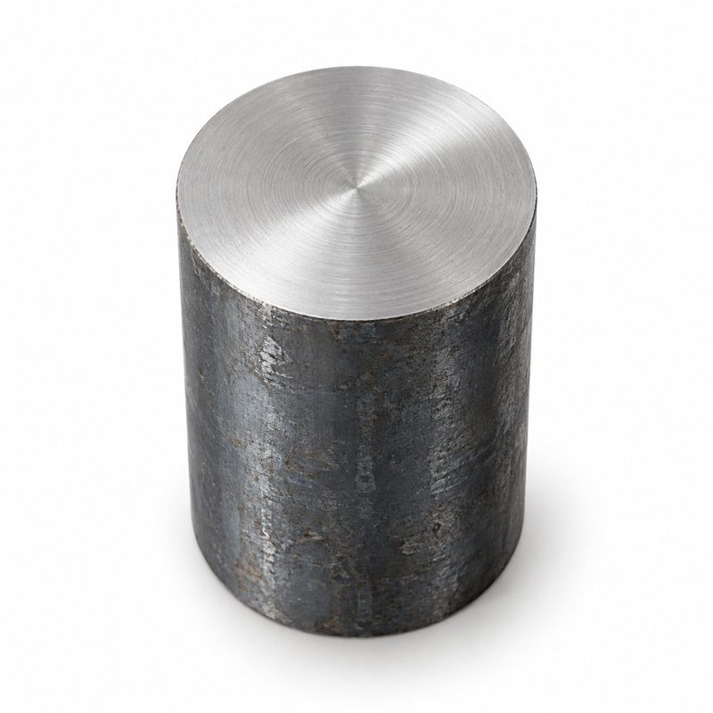
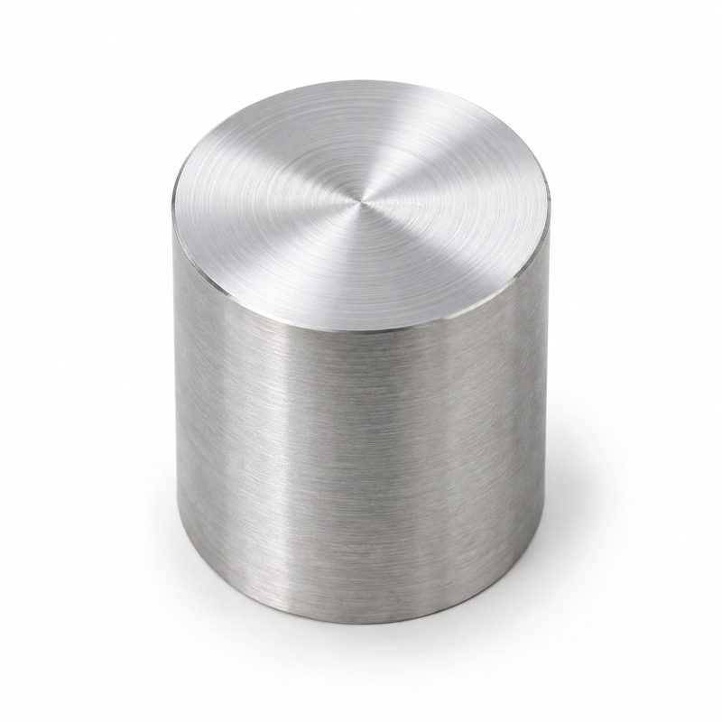
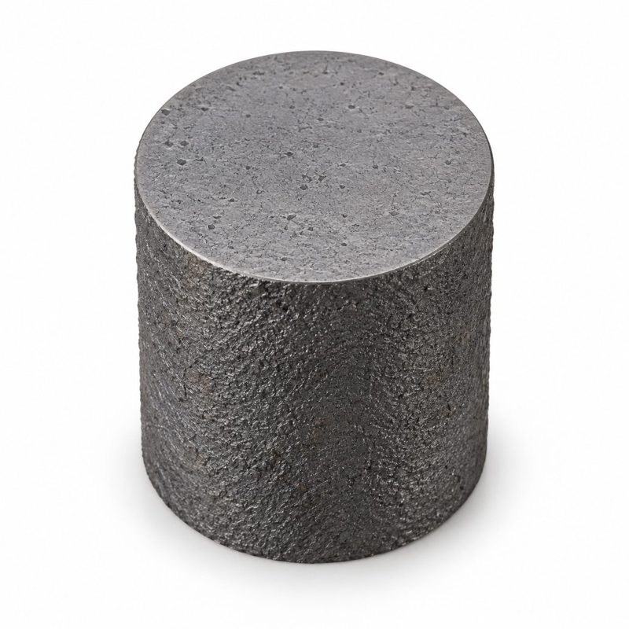
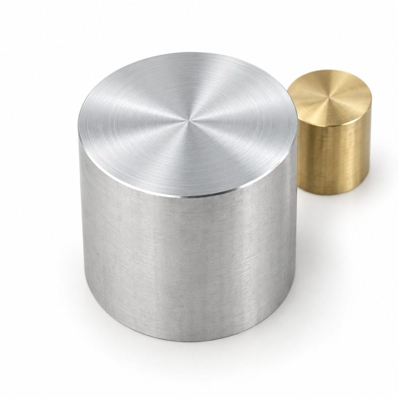
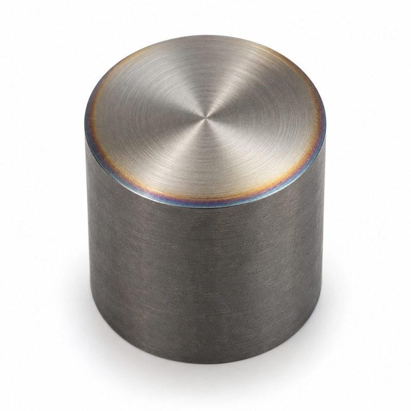
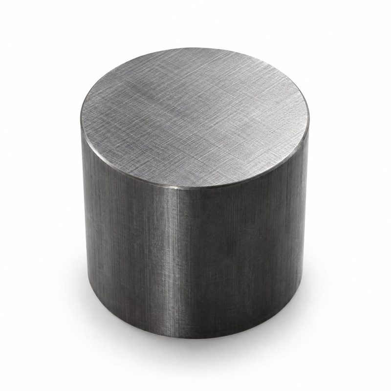

Режущий инструмент для металлообработки
Пластины, фрезы, свёрла, резьбовой и специальный инструмент — под материал, станок и стабильность серии.
Бренды по видам обработки
17 брендов инструмента и оснастки. Выберите операцию — останутся бренды, которые её закрывают.
 Собственная марка Механита: подбор под деталь
Собственная марка Механита: подбор под деталь Инструментальная оснастка и режущий инструмент
Инструментальная оснастка и режущий инструмент Российский твердосплавный инструмент и оснастка
Российский твердосплавный инструмент и оснастка Твердосплавный инструмент и пластины
Твердосплавный инструмент и пластины Резьба, канавки и отрезка
Резьба, канавки и отрезка Инструмент и оснастка российской марки
Инструмент и оснастка российской марки Метчики, резьбовые фрезы, протяжной инструмент
Метчики, резьбовые фрезы, протяжной инструмент Пластины и фрезы для сложных материалов
Пластины и фрезы для сложных материалов Монолитные фрезы, свёрла и развёртки
Монолитные фрезы, свёрла и развёртки Фрезы, свёрла и резьбовой инструмент
Фрезы, свёрла и резьбовой инструмент Свёрла, развёртки, зенкеры и метчики
Свёрла, развёртки, зенкеры и метчики Алмазный инструмент PCD
Алмазный инструмент PCD Микросвёрла для миниатюрных деталей
Микросвёрла для миниатюрных деталей Инструментальная оснастка и расточные системы
Инструментальная оснастка и расточные системы Приводные блоки и угловые головки
Приводные блоки и угловые головки Револьверные головки и приводные блоки
Револьверные головки и приводные блоки Цанги и направляющие втулки
Цанги и направляющие втулки
Группы материалов ISO
С группы начинается подбор: она задаёт геометрию, сплав и покрытие раньше, чем бренд.

PСталиДлинная сливная стружка — нужен работающий стружколом и стойкость к лунке износа

MНержавеющиеНаклёп и налипание — острая геометрия и подача без выхаживания на месте

KЧугунСтружка надлома, абразивный износ — прочная кромка и теплостойкое покрытие

NЦветныеНалипание — полированные канавки, большой передний угол, иногда алмазный инструмент

SЖаропрочныеНизкая теплопроводность — пониженная скорость и обильная подача СОЖ в зону

HЗакалённыеТолько прочная кромка: твёрдый сплав с фаской, CBN или керамика
Покрытия и когда они работают

| Покрытие | Где применяют | Ограничение |
|---|---|---|
| TiN | Универсальное, стали на умеренных скоростях | Уступает современным покрытиям по теплостойкости |
| TiCN | Абразивные материалы, сверление, чугун | Ниже теплостойкость — не для высоких скоростей |
| TiAlN / AlTiN | Стали и нержавеющие на высоких скоростях, сухая обработка и с СОЖ | Плохо работает по алюминию |
| AlCrN | Высокие температуры в зоне резания, чугун, закалённые стали | Дороже, избыточно для простых задач |
| Без покрытия, полированная канавка | Алюминиевые и медные сплавы, вязкие цветные металлы | Не для сталей |
| Алмазное: PCD, CVD | Композиты, графит, цветные металлы | Не применяют по чёрным металлам — углерод диффундирует в железо |
Значения — ориентиры для типовых исполнений. Рабочие цифры по конкретной позиции берутся из каталога производителя, окончательные — после проверки на вашем станке.
Подбор по операции
Стартовые режимы, типовые проблемы и их причины — для каждой операции.


Ошибки при выборе инструмента
Шесть решений, которые чаще всего обходятся дороже экономии.
Выбирают по цене позиции, а не по стоимости обработки детали
Пластина вдвое дешевле при вдвое меньшей стойкости выходит дороже на партии
Не проверяют мощность станка под выбранный режим
Просадка оборотов, вибрация, скол кромки вместо нормального износа
Одна геометрия на черновую и чистовую
Либо не держит припуск, либо не даёт нужную шероховатость
Меняют инструмент, не меняя режимы
Новый инструмент работает на чужих режимах и не показывает свой ресурс
Не учитывают вылет и жёсткость установа
Вибрацию списывают на инструмент, хотя причина в оснастке
Нет учёта стойкости
Момент замены определяют на глаз, брак обнаруживают по факту
Частые вопросы
Нужны материал заготовки, операция, станок и требования к точности и шероховатости — по ним технолог подберёт пластины, геометрию и режимы резания.
Да, специальный инструмент разрабатывается и поставляется под конкретную деталь или технологическую операцию.
В серии считается стоимость обработки детали: там окупается дорогая кромка с большей стойкостью и специальный инструмент, который закрывает несколько переходов сразу. На единичной детали выгоднее универсальный инструмент со склада — он не должен окупаться, он должен быть завтра.
Да. Для этого нужны обозначение старой позиции, материал детали, станок и режимы, на которых она работала. Подбираем аналог по геометрии, сплаву и посадочным размерам и проверяем на пробной детали.
Нужен инструмент под конкретную деталь?
Передайте чертёж, материал и операцию — технолог подберёт пластины, фрезы или специальный инструмент под задачу.